ofn-path-to-shape
ofn-path-to-shape has been spurred by:
- the inability to obtain paths in the Gfig filter
- the cumbersome entry of point coordinates in other scripts (such as the shape-path.scm classic)
So this script takes a different approach: points coordinates come from anchors in an existing path. In other words, a path, drawn by hand or obtained bya previous script execution, is used to specify another path.
Functions in this script are divided in three groups:
- Shapes on strokes: each stroke in the path is interpreted to fully describe a shape: position, size, orientation, number of sides, etc.... These functions do not take additional parameters, since everything is specified in the strokes.
- Shapes on segments: the successive anchors in strokes are interpreted as the ends of segments. An additional dialog asks for shape parameters (orientation, number of sides, etc...)
- a third group contains functions that don't fit any other group (such as drawing tangents)
The functions are accessed in a Shapes sub-menu, at the bottom of the right-click menu in the Paths list:
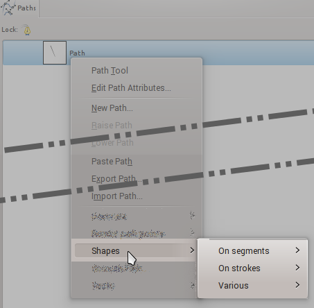
Note: You need at least one path in that list before you can right-click on something.
Since a schematic is worth a thousands words, functions are mostly documented with graphics. The source path (the one on which the script is called) is in blue , and the result path is in red .
Functions on strokes
The general rules of functions on strokes are:
- The script creates one shape per stroke in the path. So avoid incomplete strokes and stray points.
- The first point of a stroke is the position of the shape. Where it matters, the shape is guaranteed to pass through that point (or to be exactly centered on it)
- The second point gives a size and/or the orientation
- More points usually determine a count
- There are of course exceptions...
Circles
Note: Constructing a circle from a center and a radius or from a diameter is a function on segments (see below)
Circumcircle
This function draws the circle going through three points. In practice it finds the center and radius of the circle, and draws an approximation of the circle with Bezier splines, which may not go exactly through all three points, but by construction the first point is guaranteed to be on the circle.
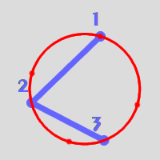
For best accuracy, the three points should be as much spread apart as possible.
Crosshair
This function draws two perpendicular diameters of the circumcircle, one of them going through the first point of the stroke. Although it has its uses to draw accurate diameters, it is mostly handy to determine the center of the circle for various purposes, including many that won't even involve paths, such as the starting point for a radial gradient.
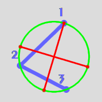
Lines
Divide segment
The straight lines that goes through the two ends of the stroke is divided in as many sub-segments. In other words, the intermediate anchors in the source stokes are repositioned to equally divide the stroke.

Multiply segment
The straight line segment that goes through the first two points of the stroke is extended with as many aligned sub-segments. In other words, the subsequent anchors are realigned with the first two and equally spaced.
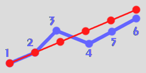
Polygons
Polygon from circumradius
The circumradius is the line between the center of the polygon and a corner. The stroke points are:
- The center,
- The first corner,
- More points indicates the other corners, so that the whole stroke has one more anchor than the required number of corners.
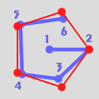
Note that if corner points can be roughly positioned on the image, which may help determine the needed number of corners, this is not mandatory and this would work just as well:
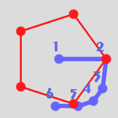
Polygon from apothem
The apothem is the line between the center of the polygon and the middle of a side. The stroke points are:
- The center,
- The middle of the first side,
- More points indicate the other sides, so that the whole stroke has one more anchor than the required number of sides.
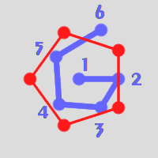
Polygon from side
The stroke points are:
- The beginning of the first side of the polygon,
- The end of the first side of the polygon,
- The first additional side. This point also indicates on which side of the initial segment the polygon should be.
- More points indicate the number of sides.
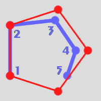
Rounded polygons
Rounded polygons are polygons with rounded corners. In the functions described below:
- The radius is the line between the polygon center and the midpoint of a circle arc in a corner (in blue in the image below). It is not the radius of the "pointy" polygon than encloses the rounded one.
- The roundness or amount of rounding is expressed as percentage (from 0 to 100%), and is the ratio of the radius of the circles arcs in the corners (in orange) to the radius of the rounded polygon as defined above. A rounded polygon is a "pointy" polygon with a roundness of 0, and a circle with a roundness of 100%.
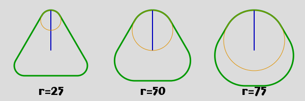
Rounded polygons (blue) can be seen as having an inner "support" polygon (green), whose corners are used as the center or the circles arcs. Between the two lies a strip of constant width (orange):
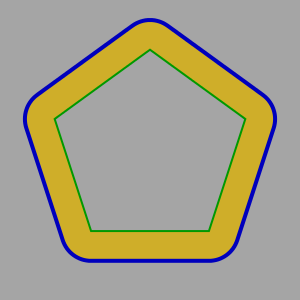
Rounded polygon from circumradius
The stroke points are:
- The center,
- The center of the rounding arc for the first corner,
- The midpoint of the arc of the first corner
- More points indicates the other corners, so that the whole stroke has two more anchors than the required number of corners.

Remark: the "support" polygon can be easily be constructed by deleting the third point of the stroke and using the function "Polygon from circumradius"
Rounded polygon from apothem
The stroke points are:
- The center,
- The radius of the rounding arc for the corners (th width of the orange strip in the picture above)
- The middle of the first side,
- More points indicate the other sides, so that the whole stroke has two more anchors than the required number of sides.
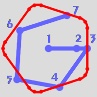
Rounded polygon from side
The stroke points are:
- The beginning of the first side of the enclosing "pointy" polygon (yellow),
- The beginning of the rounding arc,
- The end of the first side of the enclosing "pointy" polygon,
- The first additional side. This point also indicates on which side of the initial segment the polygon should be.
- More points indicate the number of sides, so that the whole stroke has one more anchor than the required number of sides.
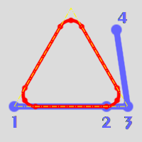
Stars
Spokes
The stroke points are:
- The center,
- The end of the first spoke,
- Any additional points indicate additional spokes.
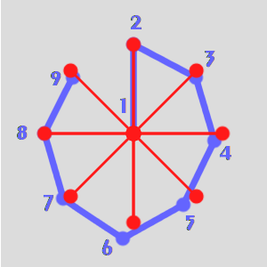
Star
The stroke points are:
- The center,
- The first outer ray,
- The radius for the inner corners,
- Additional points indicate the required number of rays.
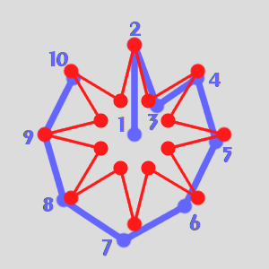
Double star
The stroke points are:
- The center,
- The first outer ray,
- The radius for the inner corners,
- The radius for the secondary rays,
- Additional points indicate the required main rays.
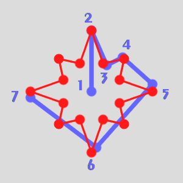
Rectangle
Unlike the other constructs, the stroke points do not define the orientation. The rectangle is always upright, with vertical and horizontal sides.
The stroke points are:
- One corner of the rectangle,
- The opposite corner of the rectangle,
- Optionally the radius of the rounded corners,
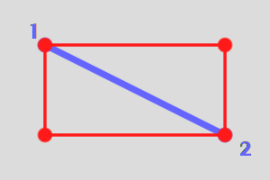 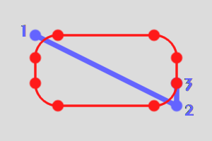
Functions on segments
Functions on segments build a shape using intervals between anchors in each stroke. The intervals only define the position, size and orientation of the shapes, everything else is specified in a dialog.
There are two ways to obtain segments from the stroke (in blue):
- overlapping segments (in green) originate on the first anchor of the stroke, and end on each of the other anchors.
- consecutive segments (in red) originate on the successive anchors, and end on the next anchor.
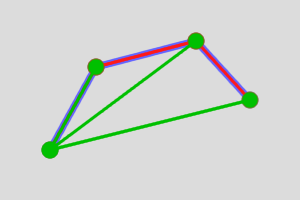
Circles
Parameters are:
- The use of the segments as radius or diameter (when used as a radius, the first anchor is the center)
- The overlapping/consecutive segments
Of course, a single stroke with two points can be used to generate a simple circle.
Some examples:
Overlapping & diameter:
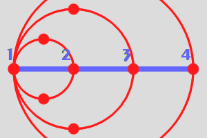
Consecutive & diameter:
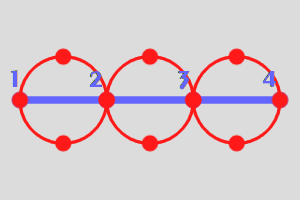
Concentric circles obtained by overlapping segments used as radiuses. The source stroke has been equally divided using the Stroke>Line>Divide function.
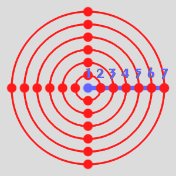
Polygons
Parameters are:
- The shapes: polygons are self-explanatory, spokes are just the radiuses of the same polygon.
- How the segment is used to position the polygon. Considering the circle that has the segment
as a diameter (dotted blue circle), this circle can be:
- The circle that goes through the summits (circumcircle, red)
- The circle that goes through the middle of the sides (incircle, in green)
- A slightly augmented and shifted circle, so that the polygon goes through both ends of the segment (pseudo-diameter, in yellow). For even polygons this option will produce polygons that are also available with other options.
- Whether the first point of the segment is a corner or a side
- Whether to use overlapping or consecutive segments
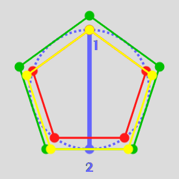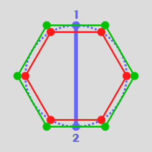
Rounded polygons
Parameters are:
- The shapes: polygons are self-explanatory, spokes are just the radiuses of the same polygon.
- How the segment is used to position the polygon. Considering the circle that has the segment
as a diameter (dotted blue circle), this circle can be:
- The circle that goes though the summits (circumcircle, red)
- The circle that goes through the middle of the sides (incircle, in green)
- A slightly augmented and shifted circle, so that the polygon goes through both ends of the segment (pseudo-diameter, in yellow). For even polygons this option will produce polygons that are also available with other options.
- Whether the first point of the segment is a corner or a side
- Whether to use overlapping or consecutive segments
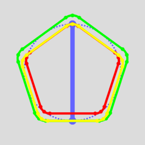
Modify segments
This function is merely a way to move/resize the segments. The parameters are:
- Start: the position (as a percentage) of the new first point relative to the current segment.
- End: the position (as a percentage) of the new second point relative to the current segment.
Example: result with Start=50 and End=110:

Hints:
- Start=0, End=100 leaves the segment unchanged
- Start=100, End=0 reverses the direction of the segment
- Negative values (down to -100) are taken backwards from the first point of the source
- Values above 100 (up to 200) extend the result segment beyond the second point of the source segment.
- Start=-50, End=150 doubles the length of the seement while leaving it centered on the same point.
Various functions
The catch-all section for everything that doesn't fit elsewhere.
Tangents
These functions compute the tangent to circles from either another circle or from a point. The circles are specified as either:
- Three points that define a circle (as used in Shapes>On strokes>Circle>Circumcircle)
- Two points that define a center and a radius (if a diameter is available, it can be divided in two using Shapes>On strokes>Lines>Divide segment
In other words, these functions do not operate only circle paths, but also on the paths that are used to construct the circles.
The result of these functions are additional paths that define the tangents. All possible tangents are computed, but there is one path per category of tangent so unwanted tangents can be easily discarded.
Tangents between circles
- If the selected path contains several strokes then the first stroke is the target circle and other strokes are assumed to define other circles from which tangents to the target circle are computed. However the order of the strokes can be difficult to determine, so this method is only recommended for two circles.
- If the selected path contains one single stroke, this stroke is the target circle and the function searches for "linked" paths to use their strokes to define the other circles.
Note:
- There are two pairs of tangents between circles, the "inner" tangents (that go between the circles) and the "outer" ones.
- The inner tangents do not exist if the circles intersect
- There are no tangents if one circle is completely inside the other.
In the example below, a path containing two strokes (in blue) is used to create the tangents between two circles:
- the inner tangents (in yellow)
- the outer tangents (in green),
It can of course also be used to construct the circles (in red).
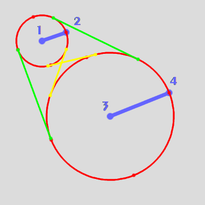
Tangents to circle from point
- If the selected path contains several strokes then the first stroke is the target circle and other strokes are assumed to define the origin points from which tangents to the target circle are computed. The path editor allows strokes containing a single point.
- If the selected path contains one single stroke, this stroke is the target circle and the function searches for "linked" paths to use their strokes to define the origin points of the tangents.
Note:
- There are no tangents if the origin point is completely inside the circle.
In the example below:
- a path containing one stroke (in blue) defines a target circle (in red)
- a linked path containing a polygon (in green) defines the origins of several tangents (in yellow).
The function is called on the blue path, after clicking on the link icon for the green path.
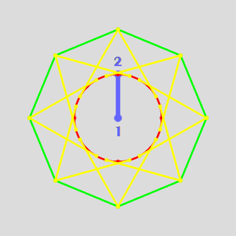
Using tangents to make continuous paths
When a continuous path must be obtained using parts of the circle(s) and the tangents, the trick is to use the tangent paths as guides to edit the circle path:
- Make the paths with required tangents visible.
- Create the circle path using the paths that were used to compute the tangents.
Add anchors on the circle where the tangent ends (Ctrl-click on the circle). The tangent handles for the added anchor will be aligned with the tangent path it the added anchor is positioned correctly.
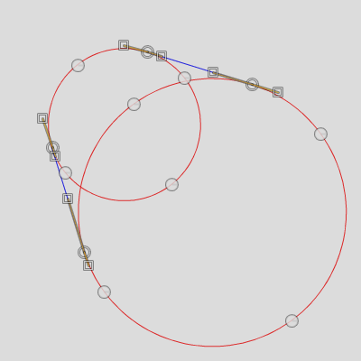
Remove the unnecessary segments and anchors of the circles between the contact points, by Ctrl-Shift-clicking on them.
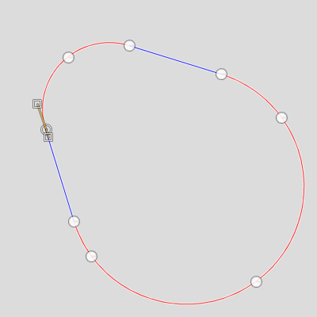
Click on one of the contact points to select it, and Ctrl-click on the corresponding contact point on the other circle (or on the tangents origin point). This should create a straight line between the two.
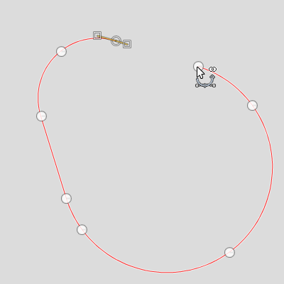
Done
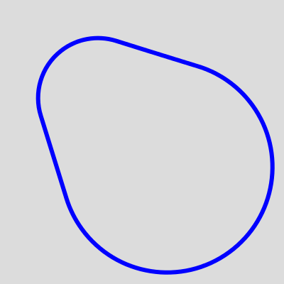
Putting it all together: creating a clock dial
The clock dial will have circles to make the hours, and small ticks for the minutes.
Hours
Add guides as an aid, and create a first path with the first point on the clock center, the second point on the 12 o'clock mark, then eleven more points roughly where the other hour marks will be (they could actually be anywhere, only their count is important, but this helps make sure their number is correct)
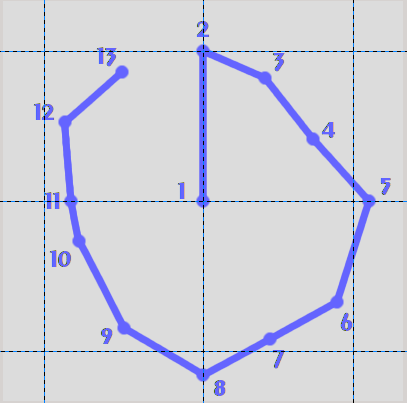
Use Shapes>On strokes>Stars>Spokes to create 12 spokes evenly spaced:
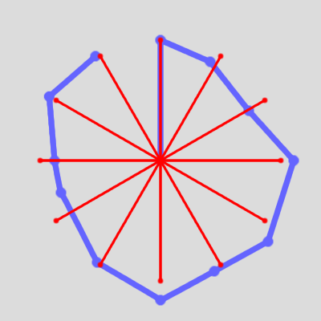
Getting the circles from there requires two more steps. First, using Shapes>On segments>Modify segments (with Start: 94 and End: 106) the spokes are transformed into small segments (in red) centered on their end:
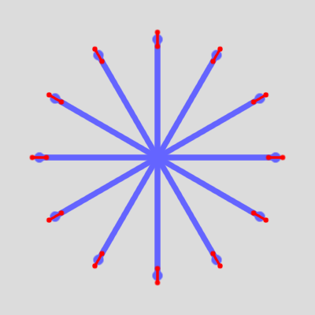
Then circles (in green) are obtained from these segments using Shapes>On segments>Circles and using Segment reference: Diameter.
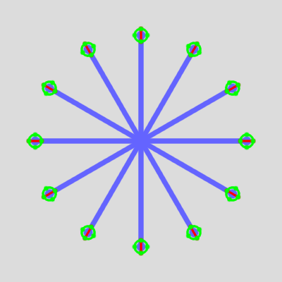
Minutes
Creating the minutes marks could be done the same way, but clicking 61 points could be prone to errors. A better way is to create a path for the clock diameter (in blue) and then use Shapes>On segments>Polygons or spokes to create 60 spokes:
- Shape: Spokes,
- Segment reference: Circumcircle,
- Sides/Spokes: 60,
- First point of segment: Summit/Spoke
Then, as for hours, create segments (in green) on the tip of the spokes, making them slightly shorter (with Start:96 and End:104):
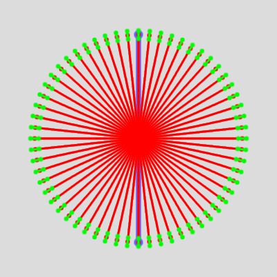
Finally
Use Edit>Stroke path to stroke the minute marks,
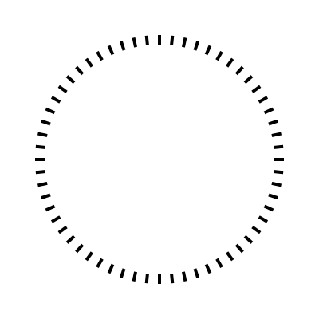
Then create a selection from the hours circles path, and bucket-fill the selection:
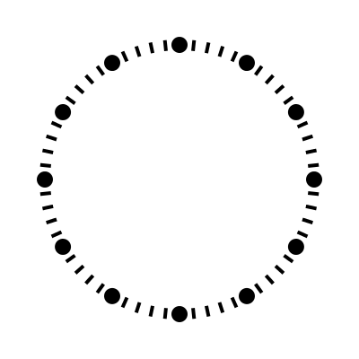
Thanks to Rich2005 for his suggestions and review